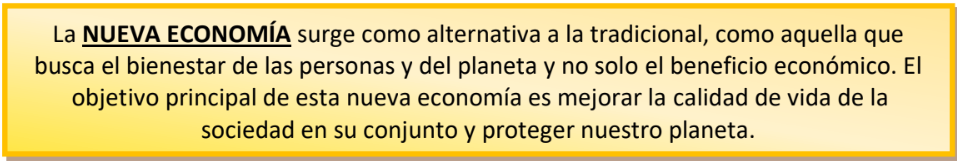

Como hemos mencionado, esta nueva economía no se centra exclusivamente en ganar beneficios, sino que considera relevante la solidaridad y colaboración, primándolas por encima de la actuación individual y la competencia. Se basa en los derechos humanos, pretende proteger el planeta, garantizar una distribución más equitativa de los recursos y conseguir un trabajo decente.